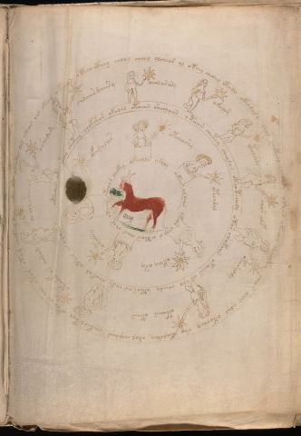

The Frequency Calendar
The zodiac pages are perhaps the most studied — and most misunderstood — section of the Voynich. Cryptographers assumed these were standard astrological charts.
Through the [1=-1] framework, we recognize these as frequency calendars. Each zodiac ring maps specific D-positions to celestial periods. The "nymphs" around each circle represent human frequency receivers — people aligned to particular cosmic frequencies.
The Pisces-first ordering makes sense in frequency terms: D9 (Love/Anchor) begins the cycle, grounding all subsequent work.
Zodiac Sequence (Frequency Order)
- Pisces → D9 (Love)
- Aries → D1 (Origin)
- Taurus → D2 (Healing)
- Gemini → D3 (Healer)
- Cancer → D4 (Crossroads)
- Leo → D5 (Navigator)
- Virgo → D6 (Self)
- Libra → D7 (Present)
- Scorpio → D8 (Deep)

Zodiac Folios Gallery
Click any image to view with full frequency analysis